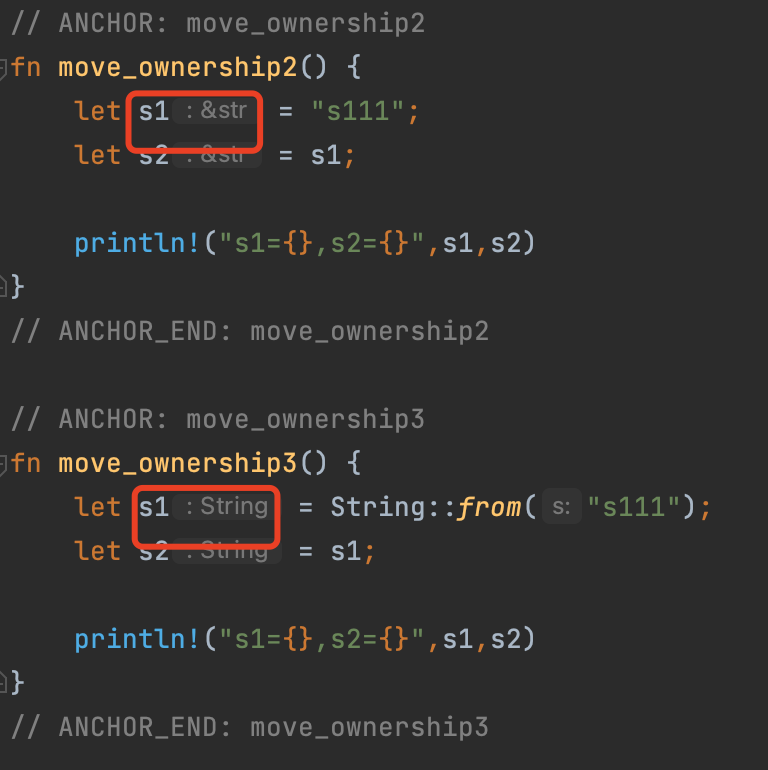

笨方法学 Rust （Learn Rust The Hard Way）
有几个问题可能需要先自我总结一下。
为什么开始学 Rust ？
2019 年疫情😷刚开始时，有一段时间开始思考技术上的需要体系化的深入，但是磨磨蹭蹭一两年还是没有任何”建树“，还是那个 CURD boy，总想改变又没有任何改变；本职工作上虽然有一些沉淀：包括团队、Java 后端、架构设计、CI&Devops ，但是感觉还是需要认真回头再学学下编程语言。
2020 年开始对 k8s 及相关纳管云平台的调研，特别是关注到 KubeSphere 这个项目，开始对想着做一些 Patch 工作，能更深入的了解 k8s、Cloud Native、Saas，但是还是受限于技能，对 go 等并不熟悉，只参与了一些文档 SIG 的工作，提提 ISSUE；2021 开始，有一段时间学习了 go 的一些知识，并没有坚持很长时间，下半年开始对数仓的选型调研，了解到 TiDB/TiKV、Databend，才真正开始关注 Rust。
为什么开始学 Rust ？
- 首先可能是一个 flag
- 除了工作之外，想选一个兴趣的语言
- 开源社区的影响，很多关注的项目是用 Rust 开发的
- 也许这也是一个“饭碗”🥣
- 为什么不是 go，大概是因为 go 相对”容易“，挑战一下 Rust
笨方法？
- 除了熟悉 Java 平常接触的也只有 Shell、Python，不熟悉 Go、C++
- 还是一个 flag；注定要走一个 Hard way：希望能坚持 ✊
- 从基础到体系；站在一个初学者角度，摒弃之前的语言先入为主的影响，从最基础开始学习
好好记录学习的过程
特别相信一句话：There is a big difference between knowing the way and walking the way。
所以还是需要自己走一遍。
TODO
- 学习：Rust 基础
- 学习：Rust 高级特性
- 学习：Rust 单元测试
- 学习：Rust 工具链
- 学习：Rust 最佳实践
- 实战：搭建 Rust 开发脚手架
- 实战：开发一个 CMD 工具 （类sqlbench）
- 实战：开发一个桌面工具软件
Rust 世界
Rust 的发展历程
Rust是由Mozilla主导开发的通用、编译型编程语言。设计准则为“安全、并发、实用”，支持函数式、并发式、过程式以及面向对象的程序设计风格。
Rust语言原本是Mozilla员工Graydon Hoare的私人计划，而Mozilla于2009年开始赞助这个计划，并且在2010年首次公开。也在同一年，其编译器源代码开始由原本的OCaml语言转移到用Rust语言，进行bootstrapping工作，称做“rustc”，并于2011年实际完成。这个可自我编译的编译器在架构上采用了LLVM做为它的后端。
第一个有版本号的Rust编译器于2012年1月发布。Rust 1.0是第一个稳定版本，于2015年5月15日发布。
Rust在完全开放的情况下开发，并且相当欢迎社区的反馈。在1.0稳定版之前，语言设计也因为透过撰写Servo网页浏览器排版引擎和rustc编译器本身，而有进一步的改善。它虽然由Mozilla资助，但其实是一个共有项目，有很大部分的代码是来自于社区的贡献者。
2021年 2 月 9 日，Rust 基金会宣布成立，由 AWS、华为、谷歌、微软和 Mozilla 联合成立，并承诺在两年的时间里，投入 100 万美元的预算，用于 Rust 项目的开发、维护和推广。
Rust 语言的特点
-
高性能 - Rust 速度惊人且内存利用率极高。由于没有运行时和垃圾回收，它能够胜任对性能要求特别高的服务，可以在嵌入式设备上运行，还能轻松和其他语言集成。
-
可靠性 - Rust 丰富的类型系统和所有权模型保证了内存安全和线程安全，让您在编译期就能够消除各种各样的错误。
-
生产力 - Rust 拥有出色的文档、友好的编译器和清晰的错误提示信息， 还集成了一流的工具 —— 包管理器和构建工具， 智能地自动补全和类型检验的多编辑器支持， 以及自动格式化代码等等。
Rust 的吉祥物
Rust 吉祥物是一只橘红色的螃蟹，名叫 Ferris。

C++、Java & Rust
... 你看C++就很相信人类，它要求人类自己把自己new出来的东西给delete掉。
C++：“这点小事我相信你可以的！”
人类：“没问题！包在我身上！”然后呢，内存泄漏、double free、野指针满世界飘…… C++：“……”
Java选择不相信人类，但替人类把事办好。
Java：“别动，让我来，我有gc！”
人类：“你怎么做事这么慢呀？你怎么还stop the world了呀？你是不是不爱我了呀？
”Java：“……”
Rust发现唯一的办法就是既不相信人类，也不惯着人类。
Rust：“按老子说的做，不做就不编译！”
人类：“你反人类！”
Rust：“滚！”
作者：左之了
链接：https://www.zhihu.com/question/328066906/answer/708085473
来源：知乎
Rust 学习曲线
学习曲线的高低，依个人水平不同而不同。以下罗列了不同基础学习 Rust 应该注意的地方。
- 完全零基础的开发者：掌握计算机基础体系知识结构，理解Rust语言和硬件/OS层的抽象，理解Rust语言核心概念、以及它的抽象模式，选择Rust语言的某个适用领域进行实操训练，通过实践来提升Rust语言的熟练度和理解深度，同时掌握领域知识。
- 有C语言基础：由于C语言开发者对高级语言的抽象不是很理解，所以着重了解掌握Rust所有权机制，包括所有权的语义，生命周期和借用检查。了解Rust语言的抽象模式，主要是类型和trait；以及Rust本身的的OOP和函数式语言特性。
- 有C++基础：C++开发者对于Rust语言的所有权有很好的理解能力，主要精力放在Rust的抽象模式和函数式语言特性上。
- 有Java/Python/Ruby基础：着重理解攻克Rust所有权机制、抽象模式、函数式编程语言特性。
- 有Go基础：Go语言开发者比较容易理解Rust的类型和trait抽象模式，但Go也是GC语言，所以所有权机制和函数式语言特性是他们的学习重点。
- 有Haskell基础：Haskell系的开发者对Rust语言函数式特性能很好的理解，主要攻克所有权机制和OOP语言特性。
Rust 生态
Rust 生态日趋丰富，很多基础库和框架都会以 包（crate） 的方式发布到 crates.io ，截止目前，crates.io 上面已经有 78362 个 crate，总下载量已经达到 14,058,075,757次。

Rust 的应用
Rust 语言可以用于开发：
- 传统命令行程序 - Rust 编译器可以直接生成目标可执行程序，不需要任何解释程序。
- Web 应用 - Rust 可以被编译成 WebAssembly，WebAssembly 是一种 JavaScript 的高效替代品。
- 网络服务器 - Rust 用极低的资源消耗做到安全高效，且具备很强的大规模并发处理能力，十分适合开发普通或极端的服务器程序。
- 嵌入式设备 - Rust 同时具有JavaScript 一般的高效开发语法和 C 语言的执行效率，支持底层平台的开发。
crates.io 上的一些统计信息：
命令行工具 （3133 crates）
no-std 库 （2778 crates）
开发工具（测试/ debug/linting/性能检测等， 2652 crates）
Web 编程 （1776 crates）
API 绑定 （方便 Rust 使用的特定 api 包装，比如 http api、ffi 相关api等，1738 crates）
网络编程 （1615 crates）
数据结构 （1572 crates）
嵌入式开发 （1508 crates）
加密技术（1498 crates）
异步开发（1487 crates）
算法 （1200 crates）
科学计算（包括物理、生物、化学、地理、机器学习等，1100 crates）
除此之外，还有 WebAssembly 、编码、文本处理、并发、GUI、游戏引擎、可视化、模版引擎、解析器、操作系统绑定 等其他分类，也有不少库。
基础库和工具链
常用知名基础库和工具链
其中已经涌现出不少优秀的基础库，都可以在 http://crates.io 首页里看到。这里罗列出一些：
序列化/反序列化：Serde
命令行开发：clap / structopt
异步/Web/网络开发： tokio / tracing /async-trait / tower / async-std tonic / actix-web /smol / surf / async-graphql / warp /tungstenite / encoding_rs / loom / Rocket
FFi 开发： libc / winapi / bindgen / pyo3 / num_enum / jni / rustler_sys/ cxx / cbindgen / autocxx-bindgen
API 开发: jsonwebtoken / validator / tarpc / nats / tonic/ protobuf / hyper / httparse / reqwest / url
解析器：nom / pest / csv / combine / wasmparser / ron / lalrpop
密码学： openssl / ring / hmac / rustls / orion / themis / RustCrypto
WebAssembly: wasm-bindgen/ wasmer / wasmtime / yew
数据库开发： diesel / sqlx / rocksdb / mysql / elasticsearch / rbatis
并发：crossbeam / parking_lot / crossbeam-channel / rayon / concurrent-queue/ threadpool / flume
嵌入式开发：embedded-hal / cortex-m / bitvec / cortex-m-rtic / embedded-dma / cross / Knurling Tools
测试：static_assertions / difference / quickcheck / arbitrary / mockall / criterion / proptest / tarpaulin/ fake-rs
多媒体开发： rust-av/ image/ svg / rusty_ffmpeg/ Symphonia/
游戏引擎和基础组件：glam / sdl2 / bevy / amethyst/ laminar/ ggez / tetra/ hecs/ simdeez/ rg3d / [rapier](https://github.com/dimforge/ra pier) / RustcraftNestadia/ naga/ Bevy Retro/ Texture Generator / building_blocks / rpg-cli / macroquad
TUI/GUI 开发：winit / gtk / egui / imgui / yew / cursive / iced / fontdue / tauri / druid
知名的 Rust 项目/产品
- TiKV： HTAP 数据库 TiDB 的 KV 存储
- Databend：The Modern Cloud Data Warehouse for Everyone.
- Yew：是一个设计先进的 Rust 框架，目的是使用 WebAssembly 来创建多线程的前端 web 应用。
- Apache Arrow-rs
- 飞书
- RustDesk
- Dropbox
试试在线 Playgroud
Rust 官方在线工具: https://play.rust-lang.org/
强烈推荐读一读《Rust 生态版图调研报告》-张汉东
Ref
Rust 学习资料
书籍文档
入门
- 《Rust 程序设计语言》
- 《深入浅出 Rust》
- 《Rustlings》
- 《通过例子学 Rust》
- 《Rust Primer》
- 《Rust Cookbook》
- 《Rust in Action》
- 《Rust 语言圣经》
进阶
高阶
特定领域
- Wasm:https://wasmer.io、https://wasmtime.dev、https://wasmedge.org
- HTTP/3: https://github.com/cloudflare/quiche
- coreutils: https://github.com/uutils/coreutils
- 算法:https://github.com/TheAlgorithms/Rust
- 游戏:https://github.com/bevyengine/bevy
- 工具:https://github.com/rustdesk/rustdesk
- 区块链:https://github.com/w3f/polkadot
- 数据库:https://github.com/tikv、https://github.com/tensorbase/tensorbase
- 编译器:https://github.com/rust-lang/rustc_codegen_gcc
- 操作系统:https://github.com/Rust-for-Linux、https://github.com/rcore-os
- Web 前端:https://github.com/yewstack/yew、https://github.com/denoland/deno
- Web 后端:https://actix.rs/、https://github.com/tokio-rs/axum、https://github.com/poem-web/poem
资源网站
- Rust 官网:https://www.rust-lang.org
- Rust 源码:https://github.com/rust-lang/rust
- Rust 文档:https://doc.rust-lang.org/stable
- Rust 参考:https://doc.rust-lang.org/reference
- Rust 杂志:https://rustmagazine.github.io/rust_magazine_2021
- Rust 库/箱:https://crates.io、https://lib.rs
- Rust 中文社区:https://rustcc.cn
- Rust 乐酷论坛:https://learnku.com/rust
- Rust 资料搜集:https://www.yuque.com/zhoujiping/programming/rust-materials
- Rust LeetCode:https://rustgym.com/leetcod
- Awesome Rust:https://github.com/rust-unofficial/awesome-rust
- Rust Cheat Sheet:https://cheats.rs
其它
- Databend Rust 公开课
- Rsut 语言圣经
- 菜鸟教程 Rust
- The Rust Programming Language(中文版)
- Cargo.toml 中指定依赖
- cargo 项目结构规范
- Rust 命名规范
- Rust 入门秘籍
- mdbook 文档
注：
本文档的操作环境：
操作系统： macOS Monterey 12.2.1
Mac 版本： Apple M1、RAM 16G
Rust 版本：1.59.0 (9d1b2106e 2022-02-23)
总结和思考
汇总一些学习过程中的总结和思考🤔
这部分放在最前面，阅读时请忽略。
绑定和赋值
#![allow(unused)] fn main() { let a = 5; }
- 在其它语言中，这种声明语法，可以理解为赋值的过程，如 Java
- 在 Rust 叫做绑定（bind），即一个值
5（Object）绑定到变量a- 绑定（bind）的理解涉及到所有权（ownership）的概念：
- 一个值同一时间只能有一个所有者（变量）
- 当所有者（变量）离开作用域时，这个值将被丢弃（drop）
- 所有权是 Rust 最重要的概念之一，但是对于初学者可以在开始时不要特别去刻意理解，可以看看基础的数据类型、泛型、特征、流程控制后再去看看。
- 绑定（bind）的理解涉及到所有权（ownership）的概念：
函数和方法
-
在面向对象（OOP）时很少会考虑什么是函数，如 Java 在反射（reflect）中有 Method 的概念，即 Class 中的方法：someClass.getMethods()；
-
理解 1：函数（Function）是面向过程的”产物“，在具有函数式编程（PF）范式的语言中都有很多具体的体现：C、Rust
-
理解 2：方法（Method）是面向对象的”产物“，在具有面向对象编程（OOP）范式的语言中都有很多具体的体现：Java、Rust
// class in Java Class MyClass { // data // methods }#![allow(unused)] fn main() { // struct/enum in Rust struct MyStruct { // data } impl MyStruct { // methods } }
0 成本抽象
- 0 成本抽象，归功于编译器；像 Rust 泛型，Java 逃逸分析等都是，把简单抽象、OOP 交给用户，而性能和“拉平代码”交给编译器
- 在 Rust 中，泛型的性能不应抽象的影响，只会影响编译的速度；编译器在编译时会检查所有的泛型类型的使用，实际上帮你手写了那些非泛型实现的代码。
0 成本抽象
走进 Rust
今日英语：Human life is limited,and serving the people is infinited.
这个章节的主要学习了 Rust 环境的安装，配置了IDE以及 Cargo 包管理，运行了第一个“Hello World！”，算是真正开始 Rust 的学习！
目录：
安装 Rust 环境
Mac 上安装 Rust 方式可以选择 brew 和官方安装方式，这里推荐官方的安装方法
安装
siu@localhost ~ % curl --proto '=https' --tlsv1.2 -sSf https://sh.rustup.rs | sh
检查是否安装成功
siu@localhost ~ % rustc -V
rustc 1.59.0 (9d1b2106e 2022-02-23)
siu@localhost ~ % cargo -V
cargo 1.59.0 (49d8809dc 2022-02-10)
卸载
siu@localhost ~ % rustup self uninstall
安装配置 IDE
官方推荐的 IDE
官方推荐的 IDE 如下：

安装 VS Code

配置 Rust 插件

其它插件：
| 插件名 | 作用 |
|---|---|
| Better TOML | toml 文件插件 |
| Error Lens | 错误展示更友好 |
| CodeLLDB | debugger 插件 |
包管理：Cargo
为了让开发者更方便地相互协作，Rust 提供了非常好用的包管理器 Cargo。Rust 代码是以包（crate）为编译和分发单位的，Cargo 提供了很多命令，方便开发者创建、构建、分发、管理自己的包。
Cargo 就像 Node.js/npm、Java/Maven 一样。
动手试试 Cargo
创建项目：cargo new
siu@localhost code % cargo new hello_world
Created binary (application) `hello_world` package
项目结构：
.
├── Cargo.toml
└── src
└── main.rs
运行：cargo run
siu@localhost code % cd hello_world
siu@localhost hello_world % cargo run
Compiling hello_world v0.1.0 (/Users/siu/Desktop/LearnRustTheHardWay/code/hello_world)
Finished dev [unoptimized + debuginfo] target(s) in 0.94s
Running `target/debug/hello_world`
Hello, world!
编译后，再运行：cargo build
编译：
siu@localhost hello_world % cargo build
Finished dev [unoptimized + debuginfo] target(s) in 0.01s
运行：
siu@localhost hello_world % ./target/debug/hello_world
Hello, world!
编译优化：--release
默认运行的是debug模式，Rust 编译器不会做任何的优化，--release可以做编译优化。
- cargo build --release
- cargo run --release
编译：
siu@localhost hello_world % cargo build --release
Compiling hello_world v0.1.0 (/Users/siu/Desktop/LearnRustTheHardWay/code/hello_world)
Finished release [optimized] target(s) in 0.61s
运行：
siu@localhost hello_world % ./target/release/hello_world
Hello, world!
编译检查：cargo check
Rust 编译速度相对会比较慢（Golang），当项目较大时，可以使用 cargo check来快速验证代码是否能通过编译。
siu@localhost hello_world % cargo check
Checking hello_world v0.1.0 (/Users/siu/Desktop/LearnRustTheHardWay/code/hello_world)
Finished dev [unoptimized + debuginfo] target(s) in 0.46s
Cargo.toml
Cargo.toml 是 cargo 的依赖库配置文件，类似 Java/.pom，Golang/go.mod 文件。
在项目中看到一个
Cargo.lock文件，它是cargo根据同一项目的toml文件生成的，通常不需要关注，类似 Golang/go.sum 。只有当项目是一个可运行的程序时才把
Cargo.lock放到 git 仓库；如果是一个依赖库项目则不需要。
TOML
TOML 是一种旨在成为一个小规模、易于使用的语义化的配置文件格式，它被设计为可以无二义性的转换为一个哈希表。
“TOML”这个名字是“Tom's Obvious, Minimal Language（汤姆的浅显的、极简的语言）”的首字母略写词。“Tom”指它的作者Tom Preston-Werner。
TOML已在一些软件工程中使用，并且很多编程语言都支持TOML格式数据的解析。
来源：维基百科 https://zh.wikipedia.org/wiki/TOML
Cargo.toml 文件配置
[package]
name = "hello_world"
version = "0.1.0"
edition = "2021"
# See more keys and their definitions at https://doc.rust-lang.org/cargo/reference/manifest.html
[dependencies]
[package]
[package] 中记录了项目的描述信息：
name: 项目名称version: 项目版本号，参考 Semver 2.0.0edition: Rust 大版本
[dependencies]
三种方式添加依赖：
- 基于 Rust 官方仓库
crates.io，通过版本说明来描述 - 基于项目源代码的 git 仓库地址，通过 URL 来描述
- 基于本地项目的绝对路径或者相对路径，通过类 Unix 模式的路径来描述
[dependencies]
rand = "0.3"
hammer = { version = "0.5.0"}
color = { git = "https://github.com/bjz/color-rs" }
geometry = { path = "crates/geometry" }
cartes.io
cartes.io 相当于 Rust 的一个官方公共仓库，很多基础库和框架都会以 包（crate） 的方式发布到 crates.io 。可以在上面找到别人已经开发好的库，也可以发布自己的开发的库。
Hello,world
fn hello_world() { println!("Hello World!"); } fn main() { hello_world(); }
// 熟悉基本的数据类型 fn data_types() { // integer 整型 let int1 = 3; // 默认就是 i32，整形 32 let int2: i32 = 3;// 也可以这样定义 let int3 = 3_i32;// 还可以这样定义 let int4 = 3i32;// 还可以这样定义 println!("{}/{}/{}/{}", int1, int2, int3, int4); // float 浮点型 let float1 = 3.1; let float2: f32 = 3.1; assert_eq!(float1, float2); // range 打印1-4，有点像 python是不是 for i in 1..5 { println!("{}", i) } // 打印 1-5 for i in 1..=5 { println!("{}", i) } } fn main() { data_types(); }
VS Code debug 配置
debug 永远都是编码中最重要的环节，所以在第一个学习阶段，需要先学习一下这部分。
配置 Launch
注：先安装 CodeLLDB 插件
Run & Debug -> Add Configuration
{
"version": "0.2.0",
"configurations": [
{
"name": "Rust Launch",
"type": "lldb",
"request": "launch",
"program": "${fileDirname}/../target/debug/${fileBasenameNoExtension}",
"args": [],
"cwd": "${workspaceRoot}",
}
]
}
全局配置
Code -> Preferences -> Settings

设置一个断点，开始 debug

ref
https://www.forrestthewoods.com/blog/how-to-debug-rust-with-visual-studio-code/
https://code.visualstudio.com/docs/editor/variables-reference
IDEA Rust 配置
熟悉 Java 的同学应该会比较熟 IDEA，是一个很棒的 IDE，对于已经有相对编程经历的我来说，切换一个 IDE 还是有点不习惯，所以还是回到 IDEA，这里记录一下 IDEA 中 Rust 的配置。如果你也是一个 Java-er，可以试试回到 IDEA，也可以体验一下 VS Code 看看。
注：IDEA 的 Rust 插件只支持旗舰版 ）：

步骤
-
官方下载安装 IDEA （推荐 <=2021.1.x，这个版本比较容易重置试用期 ）

-
Plugin 市场搜索 “Rust”，安装下面这个插件

-
重启就可以了
以上配置也适用于 CLion
Rust 基本概念
今日英语：If you are hopeful,you will be invincible.
下面是 Rust 语言的架构图，之前在知乎上看到的，为了加深体系的理解，自己动手“临摹”了一遍。

- 第一层编程范式：OOP 和 FP，比较熟悉；OOP，面向对象（封装、继承、多态） ，典型如 Java；FP 典型如 Scala；其实很多语言里面都有 FP 的影子
- 第二层语义：相对都会非常陌生，借用/所有权/生命周期
- 第三层类型：一切都是类型是理解的重点
- 第四层内存管理：安全、安全、安全
以上，还是有很多之前语言经验中没有的知识，需要端正态度，带上信心，坚持就是胜利。
// 熟悉一些基础的语法 fn some_syntax() { // 使用 let 声明变量，绑定值，x 为不可变； // 默认编译器为进行"类型推断"，所以 x 类型为 i32 // 语句末尾分号; let x0 = 3; let x1: i32 = 3; // 显示指定类型 let x2 = 3i32; // 显示指定类型 let x3 = 3_i32;// 显示指定类型 // x0 = 5; // 这一行会报错，因为 x 声明是不可变：Cannot assign twice to immutable variable [E0384] // 和 Java 一样，函数的返回值可以作为函数的参数 let x4 = add(add(x0, x1), add(x2, x3)); // m1 是可变的， mutable let mut m1 = 3; // println! 是宏调用，这个不理解，需要后面关注 // {} 用于占位，区别于其它语言 %d %s println!("可变 m1={}", m1); m1 = 4; println!("可变 m1={}", m1); } // 定义一个函数：参数，返回值 // fn <函数名>([参数名: 参数类型,...])[ -> 返回值类型] {} fn add(a: i32, b: i32) -> i32 { // return 可以省略，这里会返回 a+b 的值；表达式是可返回的 a + b } fn main() { some_syntax(); }
ref
变量
重要知识
- 变量：variable，不多解释，和所有语言的定义一致
- 变量绑定：variable bindings，可以先理解为“赋值”，但不完全是这样的
- 遮蔽：bind shadow
- 解构：是啥？后面再学习一下
变量命名
参考《Rust 语言圣经》
变量绑定
前面了解到 Rust 用 let 声明变量，let a = 9;,这个过程就叫做”变量绑定“，为什么是绑定，而不是常规理解的赋值，这里先总结这两个原则，跟所有权有关：
-
Rust 中每一个值都有且只有一个所有者(变量)
-
当所有者(变量)离开作用域范围时，这个值将被丢弃(drop)
这个还要结合所有权再去理解一下
这里简单理解为：绑定即是主从的关系，一个对象（值），绑定到它的主人（变量），代表着一种权属关系，即变量拥有值的所有权。
变量可变性
#![allow(unused)] fn main() { fn mutable() { let a = 5; // a = 6; // 报错:Cannot assign twice to immutable variable [E0384] let mut b = 5; b - 6; } }
通过 mut 声明变量的可变性，显示标记了哪些变量是可变的。
关于显示用 mut 声明变量的可变性，我认为有点设计上的矛盾，或者说不一致，前面可以看到对于类型 Rust 可以自动推导，不用显示声明，这里可变性是需要显示的声明，我的理解“变量的可变性”还是与安全关系紧密相关。
从代码阅读上看，类型推导对阅读和review 不友好，特别是离开 IDE 环境。
变量解构
fn destructure() { let (a, mut b): (bool, bool) = (true, false); println!("a={},b={}", a, b); b = true; println!("a={},b={}", a, b); assert_eq!(a, b) } fn main() { destructure(); }
关于解构模式匹配（pattern match）的内容放在后面再学习，看了部分的内容不是很理解.
不可变变量与常量
常量声明使用 const，必需标注类型，不能使用 let；不仅默认是不可变，生命周期内都不允许改变；常量命名是全部大写。
#![allow(unused)] fn main() { const MAX_LEVEL: i32 = 4; }
数据类型
Rust 是静态类型（statically typed）语言，也就是说在编译时就必须知道所有变量的类型。当然类型推断可以帮我们标注默认的类型。
标量类型（Scare Type）
- 数值类型: 有符号整数 (i8, i16, i32, i64, isize)、 无符号整数 (u8, u16, u32, u64, usize) 、浮点数 (f32, f64)、以及有理数、复数
- 字符串：字符串字面量和字符串切片 &str
- 布尔类型： true和false
- 字符类型: 表示单个 Unicode 字符，存储为 4 个字节
单元类型（Unit Type）
是一种特殊的类型，即 () ，其唯一的值也是 ()。
- unit type是一个类型，有且仅有一个值，都写成小括号()； 类似c/c++/java语言中的void。当一个函数并不需要返回值的时候，c/c++/java中函数返回void，rust则返回()。但语法层面上，void仅仅只是一个类型，该类型没有任何值;而单位类型()既是一个类型，同时又是该类型的值。
- 单元类型()也类似c/c++/java中的null，但却有很大不同。 null是一个特殊值，可以赋给不可类型的值，例如java中的对象，c中指向struct实例的指针，c++中的对象指针。但在rust中，()不可以赋值给除单元类型外的其它的类型的变量，()只能赋值给()。
- Rust标准库中使用单元类型()的一个例子是HashSet。一个HashSet只不过是HashMap的一个非常简单地包裹，写作：HashMap<T, ()>。HashMap的第二个泛型类型参数即用了单元类型()
- 可以用Result<(), MyErrorType>代替Option，某些开发者认为Result<(), MyErrorType>语义上能更简明地表示一个“结果”。
复合类型（Compound Types）
复合类型（Compound types）可以将多个值组合成一个类型。Rust 有两个原生的复合类型：元组（tuple）和数组（array）。
标量类型
标量（scalar）类型代表一个单独的值。Rust 有四种基本的标量类型：整型、浮点型、布尔类型和字符类型。
整形
| 长度 | 有符号类型 | 无符号类型 |
|---|---|---|
| 8 位 | i8 | u8 |
| 16 位 | i16 | u16 |
| 32 位 | i32 | u32 |
| 64 位 | i64 | u64 |
| 128-位 | i128 | u128 |
| 视架构而定 | isize | usize |
知识点：
- i 表示 integer
- u 表示 unsigned，无符号，只取正数
let i = 3;默认是 i32- 有符号类型数字范围是 -(2n - 1) ~ 2n -
1 - 1，其中
n是长度；i8 -128～127 - 无符号类型数字范围是 0 ~ 2n - 1，其中
n是长度；u8 0～255
Rust 中的整型字面值
| 数字字面值 | 例子 |
|---|---|
| Decimal (十进制) | 98_222 |
| Hex (十六进制) | 0xff |
| Octal (八进制) | 0o77 |
| Binary (二进制) | 0b1111_0000 |
Byte (单字节字符)(仅限于u8) | b'A' |
整型溢出
比方说有一个
u8，它可以存放从 0 到 255 的值。那么当你将其修改为范围之外的值，比如 256，则会发生整型溢出。关于这一行为 Rust 有一些有趣的规则：当在 debug 模式编译时，Rust 会检查整型溢出，若存在这些问题，则使程序在编译时 panic(崩溃,Rust 使用这个术语来表明程序因错误而退出)。在当使用
--release参数进行 release 模式构建时，Rust 不检测溢出。相反，当检测到整型溢出时，Rust 会按照补码循环溢出（two’s complement wrapping）的规则处理。简而言之，大于该类型最大值的数值会被补码转换成该类型能够支持的对应数字的最小值。比如在u8的情况下，256 变成 0，257 变成 1，依此类推。程序不会 panic，但是该变量的值可能不是你期望的值。依赖这种默认行为的代码都应该被认为是错误的代码。要显式处理可能的溢出，可以使用标准库针对原始数字类型提供的这些方法：
- 使用
wrapping_*方法在所有模式下都按照补码循环溢出规则处理，例如wrapping_add- 如果使用
checked_*方法时发生溢出，则返回None值- 使用
overflowing_*方法返回该值和一个指示是否存在溢出的布尔值- 使用
saturating_*方法使值达到最小值或最大值
// 使用 wrapping_* 方法在所有模式下都按照补码循环溢出规则处理，例如 wrapping_add // 如果使用 checked_* 方法时发生溢出，则返回 None 值 // 使用 overflowing_* 方法返回该值和一个指示是否存在溢出的布尔值 // 使用 saturating_* 方法使值达到最小值或最大值 fn int_type() { // deal with wrapping. println!("{} {} {} {}", 200u8.wrapping_add(57), // 1. 200u8.overflowing_add(57).0, // (1, true) -> 1. if 200u8.checked_add(57) == None { "overflow" } else { "not overflow" }, 200u8.saturating_add(57), // 255 (bound to the edge values). ); let one_million: i64 = 1_000_000; println!("{}", one_million.pow(2)); } fn main() { int_type(); }
浮点型（f32/f64）
知识点：
- 在 Rust 中浮点类型数字也有两种基本类型：
f32和f64，分别为 32 位和 64 位大小。 - 默认浮点类型是
f64，在现代的 CPU 中它的速度与f32几乎相同，但精度更高。
fn float_type() { let f1 = 32.4; let f2: f32 = 34.8; // 四则运算 let add = 5 + 6; let sub = 3.2 - 1.6; let mul = 3 * 4; let div = 5 / 6; // 取余 let remainder = 41 % 5; // let i = 3 + 3.4; // 不允许不同类型的运算： no implementation for `{integer} + {float}` // 定义一个 f32 的数组 let arr = [31.0, 31.0_f32, 31.0f32]; // 打印保留两位小数 println!("{:.2}", arr[0]) } fn main() { float_type(); }
浮点数陷阱
浮点数由于底层格式的特殊性，导致了如果在使用浮点数时不够谨慎，就可能造成危险，有两个原因：
- 浮点数往往是你想要数字的近似表达 浮点数类型是基于二进制实现的，但是我们想要计算的数字往往是基于十进制，例如
0.1在二进制上并不存在精确的表达形式，但是在十进制上就存在。这种不匹配性导致一定的歧义性，更多的，虽然浮点数能代表真实的数值，但是由于底层格式问题，它往往受限于定长的浮点数精度，如果你想要表达完全精准的真实数字，只有使用无限精度的浮点数才行 - 浮点数在某些特性上是反直觉的 例如大家都会觉得浮点数可以进行比较，对吧？是的，它们确实可以使用
>，>=等进行比较，但是在某些场景下，这种直觉上的比较特性反而会害了你。因为f32，f64上的比较运算实现的是std::cmp::PartialEq特征(类似其他语言的接口)，但是并没有实现std::cmp::Eq特征，但是后者在其它数值类型上都有定义，说了这么多，可能大家还是云里雾里，用一个例子来举例：
Rust 的 HashMap 数据结构，是一个 KV 类型的 HashMap 实现，它对于 K 没有特定类型的限制，但是要求能用作 K 的类型必须实现了 std::cmp::Eq 特征，因此这意味着你无法使用浮点数作为 HashMap 的 Key，来存储键值对，但是作为对比，Rust 的整数类型、字符串类型、布尔类型都实现了该特征，因此可以作为 HashMap 的 Key。
这个问题和 Java 中用 Float 作为 HashMap 的 Key 类似，equal() 调用 hashCode() 实现。
为了避免上面说的两个陷阱，你需要遵守以下准则：
- 避免在浮点数上测试相等性
- 当结果在数学上可能存在未定义时，需要格外的小心
布尔型（bool）
布尔类型使用 bool 声明，只有 true 和 fasle 两个值，占 1 个字节。
#![allow(unused)] fn main() { let t = true; let f: bool = false; // 显式声明 }
字符类型（char）
Rust 的字符不仅仅是 ASCII，所有的 Unicode 值都可以作为 Rust 字符，包括单个的中文、日文、韩文、emoji 表情符号等等，都是合法的字符类型。Unicode 值的范围从 U+0000 ~ U+D7FF 和 U+E000 ~ U+10FFFF。
由于 Unicode 都是 4 个字节编码，因此字符类型也是占用 4 个字节：
fn char_type() { let emoji: char = '😊'; let cn = '中'; println!("字符占{}个字节", std::mem::size_of_val(&emoji)) } fn main() { char_type(); }
单元类型
是一种特殊的类型，即 () ，其唯一的值也是 ()。
- unit type是一个类型，有且仅有一个值，都写成小括号()； 类似c/c++/java语言中的void。当一个函数并不需要返回值的时候，c/c++/java中函数返回void，rust则返回()。但语法层面上，void仅仅只是一个类型，该类型没有任何值;而单位类型()既是一个类型，同时又是该类型的值。
- 单元类型()也类似c/c++/java中的null，但却有很大不同。 null是一个特殊值，可以赋给不可类型的值，例如java中的对象，c中指向struct实例的指针，c++中的对象指针。但在rust中，()不可以赋值给除单元类型外的其它的类型的变量，()只能赋值给()。
- Rust标准库中使用单元类型()的一个例子是HashSet。一个HashSet只不过是HashMap的一个非常简单地包裹，写作：HashMap<T, ()>。HashMap的第二个泛型类型参数即用了单元类型()
- 可以用Result<(), MyErrorType>代替Option，某些开发者认为Result<(), MyErrorType>语义上能更简明地表示一个“结果”。
所有权和借用
在第一部分的学习中有提到“所有权”相关的概念，主要是由let a = 31; 这样的声明是“变量绑定”和以往认识的赋值有些差别，所以在基础的标量类型之后要着重理解一下“所有权”以及“借用”的关系。
所有权
所有权是 Rust 的核心功能，Rust 用所有权系统去管理计算机内存。
所有程序必须去管理其运行时使用计算机内存的方式：
-
一些语言有垃圾回收机制，如：Go，Java，在运行时不断寻找不使用的内存；
-
另一些语言中，程序员必须自己手动分配和释放内存，如：C；
-
Rust 则选择了第三种方式：用所有权系统管理内存
而且这些都是编译器在编译时就已经完成的，不会影响程序的运行效率。
C 的悬空指针
悬空指针(Dangling pointer) 是 C 语言中一个常见内存管理问题：
int* foo(){
int a;
a = 5;
char *c = "xyx";
return &a;
}
补充知识点
- 1、局部变量存储在栈中
- 2、全局变量、静态变量（全局和局部静态变量）存储在静态存储区
- 3、new申请的内存是在堆中
- 4、字符串常量也是存储在静态存储区
补充说明：
- 1、栈中的变量内存会随着定义所在区间的结束自动释放；而对于堆，需要手动free，否则它就一直存在，直到程序结束；
- 2、对于静态存储区，其中的变量常量在程序运行期间会一直存在，不会释放，且变量常量在其中只有一份拷贝，不会出现相同的变量和常量的不同拷贝。
上面这个函数被调用时返回函数内局部变量 a 的地址 &a,但是局部变量 a 是一个基本类型，存储在栈中，离开作用域时程序会申请的内存被系统回收，造成了悬空指针的问题。
而变量 c 是一个字符常量，存储在静态存储区，在程序运行期间会一直存在，直到程序退出。
知识点：栈和堆
知识点：栈和堆
栈和堆是编程语言的核心数据结构，对于 Rust 这种系统级语言而言尤为重要，值存储在栈还是堆关系着程序的性能。
栈（Stack）
栈是先入后出（FILO），可以类比为叠盘子，增加一个盘子只能从顶部（入栈），取下一个盘子只能从顶部（出栈）。
栈中的所有数据都必须占用已知且固定大小的内存空间。
堆（Heap）
与栈不同，对于大小未知或者可能变化的数据，我们需要将它存储在堆上。
当向堆上放入数据时，需要请求一定大小的内存空间。操作系统在堆的某处找到一块足够大的空位，把它标记为已使用，并返回一个表示该位置地址的指针, 该过程被称为在堆上分配内存（allocating on the heap），有时简称为 “分配”(allocating)。
接着，该指针会被推入栈中，因为指针的大小是已知且固定的，在后续使用过程中，你将通过栈中的指针，来获取数据在堆上的实际内存位置，进而访问该数据。
性能区别
写入方面：入栈比在堆上分配内存要快，因为入栈时操作系统无需分配新的空间，只需要将新数据放入栈顶即可。相比之下，在堆上分配内存则需要更多的工作，这是因为操作系统必须首先找到一块足够存放数据的内存空间，接着做一些记录为下一次分配做准备。
读取方面：栈数据往往可以直接存储在 CPU 高速缓存中（高速缓存和内存的访问速度差异在 10 倍以上！），而堆数据只能存储在内存中。访问堆上的数据比访问栈上的数据慢，因为必须先访问栈再通过栈上的指针来访问内存。
因此，处理器处理和分配在栈上数据会比在堆上的数据更加高效。
所有权与堆栈
当你的代码调用一个函数时，传递给函数的参数（包括可能指向堆上数据的指针和函数的局部变量）依次被压入栈中，当函数调用结束时，这些值将被从栈中按照相反的顺序依次移除。
因为堆上的数据缺乏组织，因此跟踪这些数据何时分配和释放是非常重要的，否则堆上的数据将产生内存泄漏 —— 这些数据将永远无法被回收。这就是 Rust 所有权系统为我们提供的强大保障。
对于其他很多编程语言，你确实无需理解堆栈的原理，但是在 Rust 中，明白堆栈的原理，对于我们理解所有权的工作原理会有很大的帮助。
所有权原则
理解了堆栈，接下来看一下关于所有权的规则，首先请谨记以下规则：
- Rust 中的每一个值都有一个被称为其 所有者（owner）的变量。
- 值在任一时刻有且只有一个所有者（owner）。
- 当所有者（变量）离开作用域，这个值将被丢弃（drop）。
变量作用域（scope）
#![allow(unused)] fn main() { fn var_scope() { let var1 = "test"; // 声明，作用域开始 // ... 使用 var1 } // 作用域结束 }
转移所有权（move）
fn move_ownership1() { let x = 5; let y = x; println!("x={},y={}",x,y) } fn move_ownership2() { let s1 = "s111"; let s2 = s1; println!("s1={},s2={}",s1,s2) } fn main() { move_ownership1(); move_ownership2(); }
move_ownership1 中，值 5 绑定到变量 x，基本类型存储在栈中；将x 的值拷贝给 y，也存储在栈上。
因为整数是 Rust 基本数据类型，是固定大小的简单值，因此这两个值都是通过自动拷贝的方式来赋值的，都被存在栈中，完全无需在堆上分配内存。
这种方式也叫浅拷贝，浅拷贝只发生在栈上的数据。
再看看这段代码：
fn move_ownership3() { let s1 = String::from("s111"); let s2 = s1; println!("s1={},s2={}",s1,s2) } fn main() { move_ownership3(); }
试试点击运行会抛出错误：error[E0382]: borrow of moved value: s1`，这其实就是 Rust 中的移动（move），s1 的所有权被转移了。
move_ownership2 和 move_ownership3 的代码有什么区别，通过IDE可以看到 s1 的数据类型是不一样的：
move_ownership3 中 s1 持有了通过String::from("s111") 创建的值的所有权，move_ownership2 中只是是引用了存储在二进制中的字符串 "s111"，并没有持有所有权。

克隆(clone)
首先，Rust 永远也不会自动创建数据的 “深拷贝”。因此，任何自动的复制都不是深拷贝，可以被认为对运行时性能影响较小。
如果我们确实需要深度复制 String 中堆上的数据，而不仅仅是栈上的数据，可以使用一个叫做 clone 的方法。
let s1 = String::from("hello"); let s2 = s1.clone();
println!("s1 = {}, s2 = {}", s1, s2); 这段代码能够正常运行，因此说明 s2 确实完整的复制了 s1 的数据。
如果代码性能无关紧要，例如初始化程序时，或者在某段时间只会执行一次时，你可以使用 clone 来简化编程。但是对于执行较为频繁的代码(热点路径)，使用 clone 会极大的降低程序性能，需要小心使用！
拷贝(copy)
浅拷贝只发生在栈上，因此性能很高，在日常编程中，浅拷贝无处不在。
再回到之前看过的例子:
#![allow(unused)] fn main() { let x = 5; let y = x; println!("x = {}, y = {}", x, y); }
但这段代码似乎与我们刚刚学到的内容相矛盾：没有调用 clone，不过依然实现了类似深拷贝的效果 —— 没有报所有权的错误。
原因是像整型这样的基本类型在编译时是已知大小的，会被存储在栈上，所以拷贝其实际的值是快速的。这意味着没有理由在创建变量 y 后使 x 无效（x、y 都仍然有效）。换句话说，这里没有深浅拷贝的区别，因此这里调用 clone 并不会与通常的浅拷贝有什么不同，我们可以不用管它（可以理解成在栈上做了深拷贝）。
Rust 有一个叫做 Copy 的特征，可以用在类似整型这样在栈中存储的类型。如果一个类型拥有 Copy 特征，一个旧的变量在被赋值给其他变量后仍然可用。
那么什么类型是可 Copy 的呢？可以查看给定类型的文档来确认，不过作为一个通用的规则： 任何基本类型的组合可以 Copy ，不需要分配内存或某种形式资源的类型是可以 Copy 的。如下是一些 Copy 的类型：
所有整数类型，比如 u32。 布尔类型，bool，它的值是 true 和 false。 所有浮点数类型，比如 f64。 字符类型，char。 元组，当且仅当其包含的类型也都是 Copy 的时候。比如，(i32, i32) 是 Copy 的，但 (i32, String) 就不是。 不可变引用 &T ，例如转移所有权中的最后一个例子，但是注意: 可变引用 &mut T 是不可以 Copy的
复合类型
复合类型（Compound types）可以将多个值组合成一个类型。Rust 有两个原生的复合类型：元组（tuple）和数组（array）。
字符串和切片
元组类型（tuple）
元组是一个将多个其他类型的值组合进一个复合类型的主要方式。元组长度固定：一旦声明，其长度不会增大或缩小。
元组中的每一个位置都有一个类型，而且这些不同值的类型也不必是相同的：
fn tuple_type() { let tup: (i32, f32, u8) = (32, 32.1, 32); // 使用"模式匹配"来"解构"元组 let (x, y, z) = tup; println!("y 的值：{}", y) } fn main() { tuple_type(); }
数组
结构体
枚举
模式匹配
方法
泛型和特征
集合类型
Rust 进阶
变量
重要知识
- 变量：variable，不多解释，和所有语言的定义一致
- 变量绑定：variable bindings，可以先理解为“赋值”，但不完全是这样的
- 遮蔽：bind shadow
- 解构：是啥？后面再学习一下
变量命名
参考《Rust 语言圣经》
变量绑定
前面了解到 Rust 用 let 声明变量，let a = 9;,这个过程就叫做”变量绑定“，为什么是绑定，而不是常规理解的赋值，这里先总结这两个原则，跟所有权有关：
-
Rust 中每一个值都有且只有一个所有者(变量)
-
当所有者(变量)离开作用域范围时，这个值将被丢弃(drop)
这个还要结合所有权再去理解一下
这里简单理解为：绑定即是主从的关系，一个对象（值），绑定到它的主人（变量），代表着一种权属关系，即变量拥有值的所有权。
变量可变性
#![allow(unused)] fn main() { fn mutable() { let a = 5; // a = 6; // 报错:Cannot assign twice to immutable variable [E0384] let mut b = 5; b - 6; } }
通过 mut 声明变量的可变性，显示标记了哪些变量是可变的。
关于显示用 mut 声明变量的可变性，我认为有点设计上的矛盾，或者说不一致，前面可以看到对于类型 Rust 可以自动推导，不用显示声明，这里可变性是需要显示的声明，我的理解“变量的可变性”还是与安全关系紧密相关。
从代码阅读上看，类型推导对阅读和review 不友好，特别是离开 IDE 环境。
变量解构
fn destructure() { let (a, mut b): (bool, bool) = (true, false); println!("a={},b={}", a, b); b = true; println!("a={},b={}", a, b); assert_eq!(a, b) } fn main() { destructure(); }
关于解构模式匹配（pattern match）的内容放在后面再学习，看了部分的内容不是很理解.
不可变变量与常量
常量声明使用 const，必需标注类型，不能使用 let；不仅默认是不可变，生命周期内都不允许改变；常量命名是全部大写。
#![allow(unused)] fn main() { const MAX_LEVEL: i32 = 4; }
数据类型
Rust 是静态类型（statically typed）语言，也就是说在编译时就必须知道所有变量的类型。当然类型推断可以帮我们标注默认的类型。
标量类型（Scare Type）
- 数值类型: 有符号整数 (i8, i16, i32, i64, isize)、 无符号整数 (u8, u16, u32, u64, usize) 、浮点数 (f32, f64)、以及有理数、复数
- 字符串：字符串字面量和字符串切片 &str
- 布尔类型： true和false
- 字符类型: 表示单个 Unicode 字符，存储为 4 个字节
单元类型（Unit Type）
是一种特殊的类型，即 () ，其唯一的值也是 ()。
- unit type是一个类型，有且仅有一个值，都写成小括号()； 类似c/c++/java语言中的void。当一个函数并不需要返回值的时候，c/c++/java中函数返回void，rust则返回()。但语法层面上，void仅仅只是一个类型，该类型没有任何值;而单位类型()既是一个类型，同时又是该类型的值。
- 单元类型()也类似c/c++/java中的null，但却有很大不同。 null是一个特殊值，可以赋给不可类型的值，例如java中的对象，c中指向struct实例的指针，c++中的对象指针。但在rust中，()不可以赋值给除单元类型外的其它的类型的变量，()只能赋值给()。
- Rust标准库中使用单元类型()的一个例子是HashSet。一个HashSet只不过是HashMap的一个非常简单地包裹，写作：HashMap<T, ()>。HashMap的第二个泛型类型参数即用了单元类型()
- 可以用Result<(), MyErrorType>代替Option，某些开发者认为Result<(), MyErrorType>语义上能更简明地表示一个“结果”。
复合类型（Compound Types）
复合类型（Compound types）可以将多个值组合成一个类型。Rust 有两个原生的复合类型：元组（tuple）和数组（array）。
Rust 异步编程
Rust 测试和持续集成
Rust 工具链
Rust 最佳实践
IDEA / CLion 开发快捷键
对于编码场景来说，开发人员的双手不离开键盘区域是能对于开发来说使用快捷键能提高很大的效率，所以在最佳实践部分，首先是总结这部分。会按照场景来整理。
以下针对 MacOS
场景 1：选择并复制多行代码
- 1、使用方向键盘、
home、end调整光标的起始位置 - 2、按住
shift用方向键选择范围 - 3、复制
使用 option+方向上下键 可以按照代码块的方式去选中代码
场景 2：查找和替换
- Double Shift 查询任何东西
- Command+Shift+F 全局查找
- Command+F 文件内查找
- Command+G 查找模式下，向下查找
- Command+Shift+G 查找模式下，向上查找
- Command+R 文件内替换
- Command+Shift+R 全局替换
- Command+O 查找类文件
- Command+Shift+O 查找所类型文件
场景 3：代码编辑
- Command+左右方向 跳到行首/行尾
- Command+/ 行注释（再按一下取消注释）
- Command+Option+/ 块注释（再按一下取消注释）
- Command+D+/ 复制当前行到下一行
- Command+Delete+/ 删除当前行
- option+shift+[CLIKC] 任意位置插入光标（比如可以用于多行同时输入）
- Control+Shift+J 将光标后代码拼接到当前行
- Command+Shift+V 粘贴板历史
- Tab 缩进代码
- Shift+Tab 反缩进代码
- Control+Option+O 优化import
- Command+Option+L 格式化代码
- Command+N 生成代码（需要设置样板代码，默认可以添加头注释）
- Control+O 覆盖方法(重写父类方法)
- Control+I 实现方法(实现接口中的方法)
- Command+Option+T 包围代码(使用if...else等包围选中的代码)
场景 4：阅读代码
- Command+[CLICK] 跳转到代码声明
- Command+Option+向左箭头/向右箭头 退回/前进到上一个位置
- Command+L 在当前文件跳转到某一行的指定处
- Command+E 显示最近打开的文件记录列表
- fn+Command+F12 打开当前文件结构层
场景 5：提交代码
- Command+K 提交代码
- Command+T 更新代码
- Option+Shift+C 查看最近的变更记录
场景 6：Debugging
| No. | 快捷键 | 描述 |
|---|---|---|
| 1 | fn+F8 | 进入下一步，如果当前行断点是一个方法，则不进入当前方法体内 |
| 2 | fn+F7 | 进入下一步，如果当前行断点是一个方法，则进入当前方法体内，如果该方法体还有方法，则不会进入该内嵌的方法中 |
| 3 | fn+Shift+F8 | 跳出 |
| 4 | fn+Command+F8 | 增加/取消断点 |
| 5 | fn+Command+Shift+F8 | 查看断点信息 |
场景 7：编译和运行
| No. | 快捷键 | 描述 |
|---|---|---|
| 1 | fn+Command+F9 | 编译项目 |
| 3 | Control+Option+R | 弹出Run的可选择菜单 |
| 5 | Control+R | 运行 |
| 6 | Control+D | 调试 |
Rust 实战
实战：写一个 Rust 开发脚手架（TODO）
实战：写一个 Rust 开发脚手架（TODO）
实战：写一个 Rust 开发脚手架（TODO）
实战：写一个 Rust 开发脚手架（TODO）
实战：写一个类 sqlbench 的 sql 测试工具（TODO）
实战：写一个类 sqlbench 的 sql 测试工具（TODO）
实战：写一个类 sqlbench 的 sql 测试工具（TODO）
实战：写一个类 sqlbench 的 sql 测试工具（TODO）
实战：写一个类 sqlbench 的 sql 测试工具（TODO）
实战：写一个类 sqlbench 的 sql 测试工具（TODO）
实战：写一个 Google Translate App（TODO）
实战：写一个类 sqlbench 的 sql 测试工具（TODO）
实战：写一个类 sqlbench 的 sql 测试工具（TODO）
实战：写一个类 sqlbench 的 sql 测试工具（TODO）
实战：写一个类 sqlbench 的 sql 测试工具（TODO）
实战：写一个类 sqlbench 的 sql 测试工具（TODO）
笨方法学 Rust （Learn Rust The Hard Way）
有几个问题可能需要先自我总结一下。
为什么开始学 Rust ？
2019 年疫情😷刚开始时，有一段时间开始思考技术上的需要体系化的深入，但是磨磨蹭蹭一两年还是没有任何”建树“，还是那个 CURD boy，总想改变又没有任何改变；本职工作上虽然有一些沉淀：包括团队、Java 后端、架构设计、CI&Devops ，但是感觉还是需要认真回头再学学下编程语言。
2020 年开始对 k8s 及相关纳管云平台的调研，特别是关注到 KubeSphere 这个项目，开始对想着做一些 Patch 工作，能更深入的了解 k8s、Cloud Native、Saas，但是还是受限于技能，对 go 等并不熟悉，只参与了一些文档 SIG 的工作，提提 ISSUE；2021 开始，有一段时间学习了 go 的一些知识，并没有坚持很长时间，下半年开始对数仓的选型调研，了解到 TiDB/TiKV、Databend，才真正开始关注 Rust。
为什么开始学 Rust ？
- 首先可能是一个 flag
- 除了工作之外，想选一个兴趣的语言
- 开源社区的影响，很多关注的项目是用 Rust 开发的
- 也许这也是一个“饭碗”🥣
- 为什么不是 go，大概是因为 go 相对”容易“，挑战一下 Rust
笨方法？
- 除了熟悉 Java 平常接触的也只有 Shell、Python，不熟悉 Go、C++
- 还是一个 flag；注定要走一个 Hard way：希望能坚持 ✊
- 从基础到体系；站在一个初学者角度，摒弃之前的语言先入为主的影响，从最基础开始学习
好好记录学习的过程
特别相信一句话：There is a big difference between knowing the way and walking the way。
所以还是需要自己走一遍。
TODO
- 学习：Rust 基础
- 学习：Rust 高级特性
- 学习：Rust 单元测试
- 学习：Rust 工具链
- 学习：Rust 最佳实践
- 实战：搭建 Rust 开发脚手架
- 实战：开发一个 CMD 工具 （类sqlbench）
- 实战：开发一个桌面工具软件
笨方法学 Rust （Learn Rust The Hard Way）
有几个问题可能需要先自我总结一下。
为什么开始学 Rust ？
2019 年疫情😷刚开始时，有一段时间开始思考技术上的需要体系化的深入，但是磨磨蹭蹭一两年还是没有任何”建树“，还是那个 CURD boy，总想改变又没有任何改变；本职工作上虽然有一些沉淀：包括团队、Java 后端、架构设计、CI&Devops ，但是感觉还是需要认真回头再学学下编程语言。
2020 年开始对 k8s 及相关纳管云平台的调研，特别是关注到 KubeSphere 这个项目，开始对想着做一些 Patch 工作，能更深入的了解 k8s、Cloud Native、Saas，但是还是受限于技能，对 go 等并不熟悉，只参与了一些文档 SIG 的工作，提提 ISSUE；2021 开始，有一段时间学习了 go 的一些知识，并没有坚持很长时间，下半年开始对数仓的选型调研，了解到 TiDB/TiKV、Databend，才真正开始关注 Rust。
为什么开始学 Rust ？
- 首先可能是一个 flag
- 除了工作之外，想选一个兴趣的语言
- 开源社区的影响，很多关注的项目是用 Rust 开发的
- 也许这也是一个“饭碗”🥣
- 为什么不是 go，大概是因为 go 相对”容易“，挑战一下 Rust
笨方法？
- 除了熟悉 Java 平常接触的也只有 Shell、Python，不熟悉 Go、C++
- 还是一个 flag；注定要走一个 Hard way：希望能坚持 ✊
- 从基础到体系；站在一个初学者角度，摒弃之前的语言先入为主的影响，从最基础开始学习
好好记录学习的过程
特别相信一句话：There is a big difference between knowing the way and walking the way。
所以还是需要自己走一遍。
TODO
- 学习：Rust 基础
- 学习：Rust 高级特性
- 学习：Rust 单元测试
- 学习：Rust 工具链
- 学习：Rust 最佳实践
- 实战：搭建 Rust 开发脚手架
- 实战：开发一个 CMD 工具 （类sqlbench）
- 实战：开发一个桌面工具软件
笨方法学 Rust （Learn Rust The Hard Way）
有几个问题可能需要先自我总结一下。
为什么开始学 Rust ？
2019 年疫情😷刚开始时，有一段时间开始思考技术上的需要体系化的深入，但是磨磨蹭蹭一两年还是没有任何”建树“，还是那个 CURD boy，总想改变又没有任何改变；本职工作上虽然有一些沉淀：包括团队、Java 后端、架构设计、CI&Devops ，但是感觉还是需要认真回头再学学下编程语言。
2020 年开始对 k8s 及相关纳管云平台的调研，特别是关注到 KubeSphere 这个项目，开始对想着做一些 Patch 工作，能更深入的了解 k8s、Cloud Native、Saas，但是还是受限于技能，对 go 等并不熟悉，只参与了一些文档 SIG 的工作，提提 ISSUE；2021 开始，有一段时间学习了 go 的一些知识，并没有坚持很长时间，下半年开始对数仓的选型调研，了解到 TiDB/TiKV、Databend，才真正开始关注 Rust。
为什么开始学 Rust ？
- 首先可能是一个 flag
- 除了工作之外，想选一个兴趣的语言
- 开源社区的影响，很多关注的项目是用 Rust 开发的
- 也许这也是一个“饭碗”🥣
- 为什么不是 go，大概是因为 go 相对”容易“，挑战一下 Rust
笨方法？
- 除了熟悉 Java 平常接触的也只有 Shell、Python，不熟悉 Go、C++
- 还是一个 flag；注定要走一个 Hard way：希望能坚持 ✊
- 从基础到体系；站在一个初学者角度，摒弃之前的语言先入为主的影响，从最基础开始学习
好好记录学习的过程
特别相信一句话：There is a big difference between knowing the way and walking the way。
所以还是需要自己走一遍。
TODO
- 学习：Rust 基础
- 学习：Rust 高级特性
- 学习：Rust 单元测试
- 学习：Rust 工具链
- 学习：Rust 最佳实践
- 实战：搭建 Rust 开发脚手架
- 实战：开发一个 CMD 工具 （类sqlbench）
- 实战：开发一个桌面工具软件
笨方法学 Rust （Learn Rust The Hard Way）
有几个问题可能需要先自我总结一下。
为什么开始学 Rust ？
2019 年疫情😷刚开始时，有一段时间开始思考技术上的需要体系化的深入，但是磨磨蹭蹭一两年还是没有任何”建树“，还是那个 CURD boy，总想改变又没有任何改变；本职工作上虽然有一些沉淀：包括团队、Java 后端、架构设计、CI&Devops ，但是感觉还是需要认真回头再学学下编程语言。
2020 年开始对 k8s 及相关纳管云平台的调研，特别是关注到 KubeSphere 这个项目，开始对想着做一些 Patch 工作，能更深入的了解 k8s、Cloud Native、Saas，但是还是受限于技能，对 go 等并不熟悉，只参与了一些文档 SIG 的工作，提提 ISSUE；2021 开始，有一段时间学习了 go 的一些知识，并没有坚持很长时间，下半年开始对数仓的选型调研，了解到 TiDB/TiKV、Databend，才真正开始关注 Rust。
为什么开始学 Rust ？
- 首先可能是一个 flag
- 除了工作之外，想选一个兴趣的语言
- 开源社区的影响，很多关注的项目是用 Rust 开发的
- 也许这也是一个“饭碗”🥣
- 为什么不是 go，大概是因为 go 相对”容易“，挑战一下 Rust
笨方法？
- 除了熟悉 Java 平常接触的也只有 Shell、Python，不熟悉 Go、C++
- 还是一个 flag；注定要走一个 Hard way：希望能坚持 ✊
- 从基础到体系；站在一个初学者角度，摒弃之前的语言先入为主的影响，从最基础开始学习
好好记录学习的过程
特别相信一句话：There is a big difference between knowing the way and walking the way。
所以还是需要自己走一遍。
TODO
- 学习：Rust 基础
- 学习：Rust 高级特性
- 学习：Rust 单元测试
- 学习：Rust 工具链
- 学习：Rust 最佳实践
- 实战：搭建 Rust 开发脚手架
- 实战：开发一个 CMD 工具 （类sqlbench）
- 实战：开发一个桌面工具软件
笨方法学 Rust （Learn Rust The Hard Way）
有几个问题可能需要先自我总结一下。
为什么开始学 Rust ？
2019 年疫情😷刚开始时，有一段时间开始思考技术上的需要体系化的深入，但是磨磨蹭蹭一两年还是没有任何”建树“，还是那个 CURD boy，总想改变又没有任何改变；本职工作上虽然有一些沉淀：包括团队、Java 后端、架构设计、CI&Devops ，但是感觉还是需要认真回头再学学下编程语言。
2020 年开始对 k8s 及相关纳管云平台的调研，特别是关注到 KubeSphere 这个项目，开始对想着做一些 Patch 工作，能更深入的了解 k8s、Cloud Native、Saas，但是还是受限于技能，对 go 等并不熟悉，只参与了一些文档 SIG 的工作，提提 ISSUE；2021 开始，有一段时间学习了 go 的一些知识，并没有坚持很长时间，下半年开始对数仓的选型调研，了解到 TiDB/TiKV、Databend，才真正开始关注 Rust。
为什么开始学 Rust ？
- 首先可能是一个 flag
- 除了工作之外，想选一个兴趣的语言
- 开源社区的影响，很多关注的项目是用 Rust 开发的
- 也许这也是一个“饭碗”🥣
- 为什么不是 go，大概是因为 go 相对”容易“，挑战一下 Rust
笨方法？
- 除了熟悉 Java 平常接触的也只有 Shell、Python，不熟悉 Go、C++
- 还是一个 flag；注定要走一个 Hard way：希望能坚持 ✊
- 从基础到体系；站在一个初学者角度，摒弃之前的语言先入为主的影响，从最基础开始学习
好好记录学习的过程
特别相信一句话：There is a big difference between knowing the way and walking the way。
所以还是需要自己走一遍。
TODO
- 学习：Rust 基础
- 学习：Rust 高级特性
- 学习：Rust 单元测试
- 学习：Rust 工具链
- 学习：Rust 最佳实践
- 实战：搭建 Rust 开发脚手架
- 实战：开发一个 CMD 工具 （类sqlbench）
- 实战：开发一个桌面工具软件
笨方法学 Rust （Learn Rust The Hard Way）
有几个问题可能需要先自我总结一下。
为什么开始学 Rust ？
2019 年疫情😷刚开始时，有一段时间开始思考技术上的需要体系化的深入，但是磨磨蹭蹭一两年还是没有任何”建树“，还是那个 CURD boy，总想改变又没有任何改变；本职工作上虽然有一些沉淀：包括团队、Java 后端、架构设计、CI&Devops ，但是感觉还是需要认真回头再学学下编程语言。
2020 年开始对 k8s 及相关纳管云平台的调研，特别是关注到 KubeSphere 这个项目，开始对想着做一些 Patch 工作，能更深入的了解 k8s、Cloud Native、Saas，但是还是受限于技能，对 go 等并不熟悉，只参与了一些文档 SIG 的工作，提提 ISSUE；2021 开始，有一段时间学习了 go 的一些知识，并没有坚持很长时间，下半年开始对数仓的选型调研，了解到 TiDB/TiKV、Databend，才真正开始关注 Rust。
为什么开始学 Rust ？
- 首先可能是一个 flag
- 除了工作之外，想选一个兴趣的语言
- 开源社区的影响，很多关注的项目是用 Rust 开发的
- 也许这也是一个“饭碗”🥣
- 为什么不是 go，大概是因为 go 相对”容易“，挑战一下 Rust
笨方法？
- 除了熟悉 Java 平常接触的也只有 Shell、Python，不熟悉 Go、C++
- 还是一个 flag；注定要走一个 Hard way：希望能坚持 ✊
- 从基础到体系；站在一个初学者角度，摒弃之前的语言先入为主的影响，从最基础开始学习
好好记录学习的过程
特别相信一句话：There is a big difference between knowing the way and walking the way。
所以还是需要自己走一遍。
TODO
- 学习：Rust 基础
- 学习：Rust 高级特性
- 学习：Rust 单元测试
- 学习：Rust 工具链
- 学习：Rust 最佳实践
- 实战：搭建 Rust 开发脚手架
- 实战：开发一个 CMD 工具 （类sqlbench）
- 实战：开发一个桌面工具软件
附录 A：关键字
下面的列表包含 Rust 中正在使用或者以后会用到的关键字。因此，这些关键字不能被用作标识符（除了原生标识符），包括函数、变量、参数、结构体字段、模块、包、常量、宏、静态值、属性、类型、特征或生命周期。
目前正在使用的关键字
如下关键字目前有对应其描述的功能。
as- 强制类型转换，或use和extern crate包和模块引入语句中的重命名break- 立刻退出循环const- 定义常量或原生常量指针（constant raw pointer）continue- 继续进入下一次循环迭代crate- 链接外部包dyn- 动态分发特征对象else- 作为if和if let控制流结构的 fallbackenum- 定义一个枚举类型extern- 链接一个外部包,或者一个宏变量(该变量定义在另外一个包中)false- 布尔值falsefn- 定义一个函数或 函数指针类型 (function pointer type)for- 遍历一个迭代器或实现一个 trait 或者指定一个更高级的生命周期if- 基于条件表达式的结果来执行相应的分支impl- 为结构体或者特征实现具体功能in-for循环语法的一部分let- 绑定一个变量loop- 无条件循环match- 模式匹配mod- 定义一个模块move- 使闭包获取其所捕获项的所有权mut- 在引用、原生指针或模式绑定中使用，表明变量是可变的pub- 表示结构体字段、impl块或模块的公共可见性ref- 通过引用绑定return- 从函数中返回Self- 实现特征类型的类型别名self- 表示方法本身或当前模块static- 表示全局变量或在整个程序执行期间保持其生命周期struct- 定义一个结构体super- 表示当前模块的父模块trait- 定义一个特征true- 布尔值truetype- 定义一个类型别名或关联类型unsafe- 表示不安全的代码、函数、特征或实现use- 在当前代码范围内(模块或者花括号对)引入外部的包、模块等where- 表示一个约束类型的从句while- 基于一个表达式的结果判断是否继续循环
保留做将来使用的关键字
如下关键字没有任何功能，不过由 Rust 保留以备将来的应用。
abstractasyncawaitbecomeboxdofinalmacrooverrideprivtrytypeofunsizedvirtualyield
原生标识符
原生标识符（Raw identifiers）允许你使用通常不能使用的关键字，其带有 r# 前缀。
例如，match 是关键字。如果尝试编译如下使用 match 作为名字的函数：
fn match(needle: &str, haystack: &str) -> bool {
haystack.contains(needle)
}
会得到这个错误：
error: expected identifier, found keyword `match`
--> src/main.rs:4:4
|
4 | fn match(needle: &str, haystack: &str) -> bool {
| ^^^^^ expected identifier, found keyword
该错误表示你不能将关键字 match 用作函数标识符。你可以使用原生标识符将 match 作为函数名称使用：
文件名: src/main.rs
fn r#match(needle: &str, haystack: &str) -> bool { haystack.contains(needle) } fn main() { assert!(r#match("foo", "foobar")); }
此代码编译没有任何错误。注意 r# 前缀需同时用于函数名定义和 main 函数中的调用。
原生标识符允许使用你选择的任何单词作为标识符，即使该单词恰好是保留关键字。 此外，原生标识符允许你使用其它 Rust 版本编写的库。比如，try 在 Rust 2015 edition 中不是关键字，却在 Rust 2018 edition 是关键字。所以如果用 2015 edition 编写的库中带有 try 函数，在 2018 edition 中调用时就需要使用原始标识符语法，在这里是 r#try。
命名规范
基本的 Rust 命名规范在 RFC 430 中有描述。
通常，对于 type-level 的构造 Rust 倾向于使用驼峰命名法，而对于 value-level 的构造使用蛇形命名法。详情如下：
| 条目 | 惯例 |
|---|---|
| 包 Crates | unclear |
| 模块 Modules | snake_case |
| 类型 Types | UpperCamelCase |
| 特征 Traits | UpperCamelCase |
| 枚举 Enumerations | UpperCamelCase |
| 结构体 Structs | UpperCamelCase |
| 函数 Functions | snake_case |
| 方法 Methods | snake_case |
| 通用构造器 General constructors | new or with_more_details |
| 转换构造器 Conversion constructors | from_some_other_type |
| 宏 Macros | snake_case! |
| 局部变量 Local variables | snake_case |
| 静态类型 Statics | SCREAMING_SNAKE_CASE |
| 常量 Constants | SCREAMING_SNAKE_CASE |
| 类型参数 Type parameters | UpperCamelCase，通常使用一个大写字母: T |
| 生命周期 Lifetimes | 通常使用小写字母: 'a，'de，'src |
| Features | unclear but see C-FEATURE |
对于驼峰命名法，复合词的缩略形式我们认为是一个单独的词语，所以只对首字母进行大写：使用 Uuid 而不是 UUIDUsize 而不是 USizeStdin 而不是 StdIn
对于蛇形命名法，缩略词用全小写：is_xid_start。
对于蛇形命名法（包括全大写的 SCREAMING_SNAKE_CASE），除了最后一部分，其它部分的词语都不能由单个字母组成：
btree_map 而不是 b_tree_mapPI_2 而不是 PI2
包名不应该使用 -rs 或者 -rust 作为后缀，因为每一个包都是 Rust 写的，因此这种多余的注释其实没有任何意义。
特征命名
特征的名称应该使用动词，而不是形容词或者名词，例如 Print 和 Draw 明显好于 Printable 和 Drawable。
类型转换要遵守 as_，to_，into_ 命名惯例(C-CONV)
类型转换应该通过方法调用的方式实现，其中的前缀规则如下：
| 方法前缀 | 性能开销 | 所有权改变 |
|---|---|---|
as_ | Free | borrowed -> borrowed |
to_ | Expensive | borrowed -> borrowed borrowed -> owned (non-Copy types) owned -> owned (Copy types) |
into_ | Variable | owned -> owned (non-Copy types) |
例如：
str::as_bytes()把str变成 UTF-8 字节数组，性能开销是 0。输入是一个借用的&str，输出也是一个借用的&strPath::to_str会执行一次昂贵的 UTF-8 字节数组检查，输入和输出都是借用的。对于这种情况，如果把方法命名为as_str是不正确的，因为这个方法的开销还挺大str::to_lowercase()在调用过程中会遍历字符串的字符，且可能会分配新的内存对象。输入是一个借用的str，输出是一个有独立所有权的StringString::into_bytes()返回String底层的Vec<u8>数组，转换本身是零消耗的。该方法获取String的所有权，然后返回一个新的有独立所有权的Vec<u8>
当一个单独的值被某个类型所包装时，访问该类型的内部值应通过 into_inner() 方法来访问。例如将一个缓冲区值包装为 BufReader 类型，还有 GzDecoder、AtomicBool 等，都是这种类型。
如果 mut 限定符在返回类型中出现，那么在命名上也应该体现出来。例如，Vec::as_mut_slice 就说明它返回了一个 mut 切片，在这种情况下 as_mut_slice 比 as_slice_mut 更适合。
#![allow(unused)] fn main() { // 返回类型是一个 `mut` 切片 fn as_mut_slice(&mut self) -> &mut [T]; }
标准库中的一些例子
读访问器(Getter)的名称遵循 Rust 的命名规范(C-GETTER)
除了少数例外，在 Rust代码中 get 前缀不用于 Getter。
#![allow(unused)] fn main() { pub struct S { first: First, second: Second, } impl S { // 而不是 get_first pub fn first(&self) -> &First { &self.first } // 而不是 get_first_mut，get_mut_first，or mut_first pub fn first_mut(&mut self) -> &mut First { &mut self.first } } }
至于上文提到的少数例外，如下：当有且仅有一个值能被 Getter 所获取时，才使用 get 前缀。例如，Cell::get 能直接访问到 Cell 中的内容。
有些 Getter 会在过程中执行运行时检查，那么我们就可以考虑添加 _unchecked Getter 函数，这个函数虽然不安全，但是往往具有更高的性能。
典型的例子如下：
#![allow(unused)] fn main() { fn get(&self, index: K) -> Option<&V>; fn get_mut(&mut self, index: K) -> Option<&mut V>; unsafe fn get_unchecked(&self, index: K) -> &V; unsafe fn get_unchecked_mut(&mut self, index: K) -> &mut V; }
标准库示例
std::io::Cursor::get_mutstd::ptr::Unique::get_mutstd::sync::PoisonError::get_mutstd::sync::atomic::AtomicBool::get_mutstd::collections::hash_map::OccupiedEntry::get_mut<[T]>::get_unchecked
一个集合上的方法，如果返回迭代器，需遵循命名规则：iter，iter_mut，into_iter (C-ITER)
#![allow(unused)] fn main() { fn iter(&self) -> Iter // Iter implements Iterator<Item = &U> fn iter_mut(&mut self) -> IterMut // IterMut implements Iterator<Item = &mut U> fn into_iter(self) -> IntoIter // IntoIter implements Iterator<Item = U> }
上面的规则适用于同构性的数据集合。与之相反，str 类型是一个 UTF-8 字节数组切片，与同构性集合有一点微妙的差别，它可以认为是字节集合，也可以认为是字符集合，因此它提供了 str::bytes 去遍历字节，还有 str::chars 去遍历字符，而并没有直接定义 iter 等方法。
上述规则只适用于方法，并不适用于函数。例如 url 包的 percent_encode 函数返回一个迭代器用于遍历百分比编码（Percent encoding）的字符串片段. 在这种情况下，使用 iter/iter_mut/into_iter 诸如此类的函数命名无法表达任何具体的含义。
标准库示例
迭代器的类型应该与产生它的方法名相匹配(C-ITER-TY)
例如形如 into_iter() 的方法应该返回一个 IntoIter 类型，与之相似，其它任何返回迭代器的方法也应该遵循这种命名惯例。
上述规则主要应用于方法，但是经常对于函数也适用。例如上文提到的 url 包中的 percent_encode 函数，返回了一个 PercentEncode 类型。
特别是，当这些类型跟包名前缀一起使用时，将具备非常清晰的含义，例如 vec::IntoIter。
标准库示例
Vec::iterreturnsIterVec::iter_mutreturnsIterMutVec::into_iterreturnsIntoIterBTreeMap::keysreturnsKeysBTreeMap::valuesreturnsValues
Cargo Feature 的名称不应该包含占位词(C-FEATURE)
不要在 Cargo feature 中包含无法传达任何意义的词，例如 use-abc 或 with-abc，直接命名为 abc 即可。
一个典型的例子就是：一个包对标准库有可选性的依赖。标准的写法如下：
# 在 Cargo.toml 中
[features]
default = ["std"]
std = []
#![allow(unused)] fn main() { // 在我们自定义的 lib.rs 中 #![cfg_attr(not(feature = "std"), no_std)] }
除了 std 之外，不要使用任何 ust-std 或者 with-std 等自以为很有创造性的名称。
命名要使用一致性的词序(C-WORD-ORDER)
这是一些标准库中的错误类型:
JoinPathsErrorParseBoolErrorParseCharErrorParseFloatErrorParseIntErrorRecvTimeoutErrorStripPrefixError
它们都使用了 谓语-宾语-错误 的词序，如果我们想要表达一个网络地址无法分析的错误，由于词序一致性的原则，命名应该如下 ParseAddrError，而不是 AddrParseError。
词序和个人习惯有很大关系，想要注意的是，你可以选择合适的词序，但是要在包的范畴内保持一致性，就如标准库中的包一样。
Rust 语言术语中英文对照表
| English 英文 | Chinese 中文 | Note 备注 |
|---|---|---|
| A | ||
| Abstract Syntax Tree | 抽象语法树 | |
| ABI | 应用程序二进制接口 | Application Binary Interface 缩写 |
| accumulator | 累加器 | |
| accumulator variable | 累加器变量 | |
| ahead-of-time compiled | 预编译 | |
| ahead-of-time compiled language | 预编译语言 | |
| algebraic data types(ADT) | 代数数据类型 | |
| alias | 别名 | |
| aliasing | 别名使用 | 参见 Wikipedia |
| angle brackets | 尖括号，“<”和“>” | |
| annotate | 标注，注明，标记，标识（动词） | |
| annotation | 标注，注明，标记，标识（名词） | |
| ARC | 原子引用计数器 | Atomic Referecne Counter |
| anonymity | 匿名 | |
| argument | 参数，实参，实际参数 | 不严格区分的话， argument（参数）和 parameter（参量）可以互换地使用 |
| argument type | 参数类型 | |
| assignment | 赋值 | |
| associated functions | 关联函数 | |
| associated items | 关联项 | |
| associated types | 关联类型 | |
| asterisk | 星号（*) | |
| atomic | 原子的 | |
| attribute | 属性 | |
| automated building | 自动构建 | |
| automated test | 自动测试，自动化测试 | |
| B | ||
| baroque macro | 巴洛克宏 | |
| benchmark | 基准 | |
| binary | 二进制的 | |
| binary executable | 二进制的可执行文件 | |
| bind | 绑定 | |
| block | 语句块，代码块 | |
| boolean | 布尔型，布尔值 | |
| borrow check | 借用检查 | |
| borrower | 借用者，借入者 | |
| borrowing | 借用 | |
| bound | 约束，限定，限制 | 此词和 constraint 意思相近， constraint 在 C# 语言中翻译成“约束” |
| box | 箱子，盒子，装箱类型 | 一般不译，作动词时翻译成“装箱”， 具有所有权的智能指针 |
| boxed | 装箱，装包 | |
| boxing | 装箱，装包 | |
| brace | 大括号，“{”或“}” | |
| buffer | 缓冲，缓冲区，缓冲器，缓存 | |
| build | 构建 | |
| builder pattern | 创建者模式 | |
| C | ||
| call | 调用 | |
| caller | 调用者 | |
| capacity | 容量 | |
| capture | 捕获 | |
| cargo | (Rust 包管理器，不译) | 该词作名词时意思是“货物”， 作动词时意思是“装载货物” |
| cargo-fy | Cargo 化，使用 Cargo 创建项目 | |
| case analysis | 事例分析 | |
| cast | 类型转换，转型 | |
| casting | 类型转换 | |
| chaining method call | 链式方法调用 | |
| channel | 信道，通道 | |
| closure | 闭包 | |
| coercion | 强制类型转换，强制转换 | coercion 原意是“强制，胁迫” |
| collection | 集合 | 参见 Wikipedia |
| combinator | 组合算子，组合器 | |
| comma | 逗号，“,” | |
| command | 命令 | |
| command line | 命令行 | |
| comment | 注释 | |
| compile | 编译（动词） | |
| compile time | 编译期，编译期间，编译时 | |
| compilation | 编译（名词） | |
| compilation unit | 编译单元 | |
| compiler | 编译器 | |
| compiler intrinsics | 编译器固有功能 | |
| compound | 复合（类型，数据） | |
| concurrency | 并发 | |
| conditional compilation | 条件编译 | |
| configuration | 配置 | |
| constructor | 构造器 | |
| consumer | 消费者 | |
| container | 容器 | |
| container type | 容器类型 | |
| convert | 转换，转化，转 | |
| copy | 复制，拷贝 | |
| crate | 包，包装箱，装包 | 一般不译，crate 是 Rust 的基本编译单元 |
| curly braces | 大括号，包含“{”和“}” | |
| custom type | 自定义类型 | |
| D | ||
| dangling pointer | 悬垂指针 | use after free 在释放后使用 |
| data race | 数据竞争 | |
| dead code | 死代码，无效代码，不可达代码 | |
| deallocate | 释放，重新分配 | |
| declare | 声明 | |
| deep copy | 深拷贝，深复制 | |
| dependency | 依赖 | |
| deref coercion | 解引用强制转换 | |
| dereference | 解引用 | Rust 文章中有时简写为 Deref |
| derive | 派生 | |
| designator | 指示符 | |
| destruction | 销毁，毁灭 | |
| destructor | 析构器，析构函数 | |
| destructure | 解构 | |
| destructuring | 解构，解构赋值 | |
| desugar | 脱糖 | |
| diverge function | 发散函数 | |
| device drive | 设备驱动 | |
| directory | 目录 | |
| dispatch | 分发 | |
| diverging functions | 发散函数 | |
| documentation | 文档 | |
| dot operator | 点运算符 | |
| DST | 动态大小类型 | dynamic sized type，一般不译， 使用英文缩写形式 |
| dynamic language | 动态类型语言 | |
| dynamic trait type | 动态特质类型 | |
| E | ||
| enumeration | 枚举 | |
| encapsulation | 封装 | |
| equality test | 相等测试 | |
| elision | 省略 | |
| exhaustiveness checking | 穷尽性检查，无遗漏检查 | |
| expression | 表达式 | |
| expression-oriented language | 面向表达式的语言 | |
| explicit | 显式 | |
| explicit discriminator | 显式的辨别值 | |
| explicit type conversion | 显式类型转换 | |
| extension | 扩展名 | |
| extern | 外，外部 | 作关键字时不译 |
| F | ||
| fat pointer | 胖指针 | |
| feature gate | 功能开关 | |
| field | 字段 | |
| field-level mutability | 字段级别可变性 | |
| file | 文件 | |
| fmt | 格式化，是 format 的缩写 | |
| formatter | 格式化程序，格式化工具，格式器 | |
| floating-point number | 浮点数 | |
| flow control | 流程控制 | |
| Foreign Function Interface（FFI） | 外部语言函数接口 | |
| fragment specifier | 片段分类符 | |
| free variable | 自由变量 | |
| freeze | 冻结 | |
| function | 函数 | |
| function declaration | 函数声明 | |
| functional | 函数式 | |
| G | ||
| garbage collector | 垃圾回收 | |
| generalize | 泛化，泛型化 | |
| generator | 生成器 | |
| generic | 泛型 | |
| generic type | 泛型类型 | |
| growable | 可增长的 | |
| guard | 守卫 | |
| H | ||
| handle error | 句柄错误 | |
| hash | 哈希，哈希值，散列 | |
| hash map | 散列映射，哈希表 | |
| heap | 堆 | |
| hierarchy | 层次，分层，层次结构 | |
| higher rank lifetime | 高阶生命周期 | |
| higher rank trait bound | 高阶特质约束 | |
| higher tank type | 高阶类型 | |
| hygiene | 卫生 | |
| hygienic macro system | 卫生宏系统 | |
| I | ||
| ICE | 编译内部错误 | internal comppiler error 的缩写 |
| immutable | 不可变的 | |
| implement | 实现 | |
| implementor | 实现者 | |
| implicit | 隐式 | |
| implicit discriminator | 隐式的辨别值 | |
| implicit type conversion | 隐式类型转换 | |
| import | 导入 | |
| in assignment | 在赋值（语句） | |
| index | 索引 | 英语复数形式：indices |
| infer | 推导（动词） | |
| inference | 推导（名词） | |
| inherited mutability | 承袭可变性 | |
| inheritance | 继承 | |
| integrated development environment(IDE) | 集成开发环境 | 中文著作中通常直接写成 IDE |
| integration-style test | 集成测试 | |
| interior mutability | 内部可变性 | |
| installer | 安装程序，安装器 | |
| instance | 实例 | |
| instance method | 实例方法 | |
| integer | 整型，整数 | |
| interact | 相互作用，相互影响 | |
| interior mutability | 内部可变性 | |
| intrinsic | 固有的 | |
| invoke | 调用 | |
| item | 项，条目，项目 | |
| iterate | 重复 | |
| iteration | 迭代 | |
| iterator | 迭代器 | |
| iterator adaptors | 迭代器适配器 | |
| iterator invalidation | 迭代器失效 | |
| L | ||
| LHS | 左操作数 | left-hand side 的非正式缩写， 与 RHS 相对 |
| lender | 借出者 | |
| library | 库 | |
| lifetime | 生存时间，寿命，生命周期 | |
| lifetime elision | 生命周期省略 | |
| link | 链接 | |
| linked-list | 链表 | |
| lint | （不译） | lint 英文本义是“纱布，绒毛”，此词在 计算机领域中表示程序代码中可疑和 不具结构性的片段，参见 Wikipedia |
| list | 列表 | |
| listener | 监听器 | |
| literal | 数据，常量数据，字面值，字面量， 字面常量，字面上的 | 英文意思：字面意义的（内容） |
| LLVM | （不译） | Low Level Virtual Machine 的缩写， 是构建编译器的系统 |
| loop | 循环 | 作关键字时不译 |
| low-level code | 底层代码 | |
| low-level language | 底层语言 | |
| l-value | 左值 | |
| M | ||
| main function | main 函数，主函数 | |
| macro | 宏 | |
| map | 映射 | 一般不译 |
| match guard | 匹配守卫 | |
| memory | 内存 | |
| memory leak | 内存泄露 | |
| memory safe | 内存安全 | |
| meta | 原则，元 | |
| metadata | 元数据 | |
| metaprogramming | 元编程 | |
| metavariable | 元变量 | |
| method call syntax | 方法调用语法 | |
| method chaining | 方法链 | |
| method definition | 方法定义 | |
| modifier | 修饰符 | |
| module | 模块 | |
| monomorphization | 单态 | mono: one, morph: form |
| move | 移动，转移 | 按照 Rust 所规定的内容， 英语单词 transfer 的意思 比 move 更贴合实际描述 参考：Rust by Example |
| move semantics | 移动语义 | |
| mutability | 可变性 | |
| mutable | 可变 | |
| mutable reference | 可变引用 | |
| multiple bounds | 多重约束 | |
| mutiple patterns | 多重模式 | |
| N | ||
| nest | 嵌套 | |
| Nightly Rust | Rust 开发版 | nightly本意是“每夜，每天晚上”， 指代码每天都更新 |
| NLL | 非词法生命周期 | non lexical lifetime 的缩写， 一般不译 |
| non-copy type | 非复制类型 | |
| non-generic | 非泛型 | |
| no-op | 空操作，空运算 | (此词出现在类型转换章节中） |
| non-commutative | 非交换的 | |
| non-scalar cast | 非标量转换 | |
| notation | 符号，记号 | |
| numeric | 数值，数字 | |
| O | ||
| optimization | 优化 | |
| out-of-bounds accessing | 越界访问 | |
| orphan rule | 孤儿规则 | |
| overflow | 溢出，越界 | |
| own | 占有，拥有 | |
| owner | 所有者，拥有者 | |
| ownership | 所有权 | |
| P | ||
| package manager | 包管理器，软件包管理器 | |
| panic | （不译） | 此单词直接翻译是“恐慌”， 在 Rust 中用于不可恢复的错误处理 |
| parameter | 参量，参数，形参，形式参量（数） | 不严格区分的话， argument（参数）和 parameter（参量）可以互换地使用 |
| parametric polymorphism | 参数多态 | |
| parent scope | 父级作用域 | |
| parentheses | 小括号，包括“(”和“)” | |
| parse | 分析，解析 | |
| parser | （语法）分析器，解析器 | |
| pattern | 模式 | |
| pattern match | 模式匹配 | |
| phantom type | 虚类型，虚位类型 | phantom 相关的专有名词： phantom bug 幻影指令 phantom power 幻象电源 参见：Haskell、Haskell/Phantom_type、 Rust/Phantom、stdlib/PhantomData |
| platform | 平台 | |
| polymorphism | 多态 | |
| powershell | （不译） | Windows 系统的一种命令行外壳程序 和脚本环境 |
| possibility of absence | 不存在的可能性 | |
| precede | 预先？，在...发生（或出现） | |
| prelude | （不译） | 预先导入模块，英文本意：序曲，前奏 |
| primitive types | 原生类型，基本类型，简单类型 | |
| 打印 | ||
| process | 进程 | |
| procedural macros | 过程宏，程序宏 | |
| project | 项目，工程 | |
| prototype | 原型 | |
| R | ||
| race condition | 竞态条件 | |
| RAII | 资源获取即初始化（一般不译） | resource acquisition is initialization 的缩写 |
| range | 区间，范围 | |
| range expression | 区间表达式 | |
| raw identifier | 原始标识符 | |
| raw pointer | 原始指针，裸指针 | |
| RC | 引用计数 | reference counted |
| Reader | 读取器 | |
| recursive macro | 递归宏 | |
| reference | 引用 | |
| reference cycle | 引用循环 | |
| release | 发布 | |
| resource | 资源 | |
| resource leak | 资源泄露 | |
| RHS | 右操作数 | right-hand side 的非正式缩写， 与 LHS 相对 |
| root directory | 根目录 | |
| runtime | 运行时 | |
| runtime behavior | 运行时行为 | |
| runtime overhead | 运行时开销 | |
| Rust | （不译） | 一种编程语言 |
| Rustacean | （不译） | 编写 Rust 的程序员或爱好者的通称 |
| rustc | （不译） | Rust 语言编译器 |
| r-value | 右值 | |
| S | ||
| scalar | 标量，数量 | |
| schedule | 调度 | |
| scope | 作用域 | |
| screen | 屏幕 | |
| script | 脚本 | |
| semicolon | 分号，“;” | |
| self | 自身，作关键字时不译 | |
| shadow | 遮蔽，隐蔽，隐藏，覆盖 | |
| shallow copy | 浅拷贝，浅复制 | |
| signature | 标记 | |
| slice | 切片 | |
| snake case | 蛇形命名 | 参见：Snake case |
| source file | 源文件 | |
| source code | 源代码 | |
| specialization | 泛型特化 | |
| square | 平方，二次方，二次幂 | |
| square brackets | 中括号，“[”和“]” | |
| src | （不译） | source 的缩写，指源代码 |
| stack | 栈 | |
| stack unwind | 栈解开、栈展开 | |
| statement | 语句 | |
| statically allocated | 静态分配 | |
| statically allocated string | 静态分配的字符串 | |
| statically dispatch | 静态分发 | |
| static method | 静态方法 | |
| string | 字符串 | |
| string literal | 字符串常量 | |
| string slice | 字符串片段 | |
| stringify | 字符串化 | |
| subscript notation | 下标 | |
| sugar | 糖 | |
| super | 父级，作关键字时不译 | |
| syntax context | 语法上下文 | |
| systems programming language | 系统级编程语言 | |
| T | ||
| tagged union | 标记联合 | |
| target triple | 多层次指标，三层/重 指标/目标 | triple 本义是“三”，但此处虚指“多”， 此词翻译需要更多讨论 |
| terminal | 终端 | |
| testing | 测试 | |
| testsuit | 测试套件 | |
| the least significant bit (LSB) | 最低数字位 | |
| the most significant bit (MSB) | 最高数字位 | |
| thread | 线程 | |
| TOML | （不译） | Tom's Obvious, Minimal Language 的缩写，一种配置语言 |
| token tree | 令牌树 | 待进一步斟酌 |
| trait | 特质 | 其字面上有“特性，特征”之意 |
| trait bound | 特质约束 | bound 有“约束，限制，限定”之意 |
| trait object | 特质对象 | |
| transmute | （不译） | 其字面上有“变化，变形，变异”之意， 不作翻译 |
| trivial | 平凡的 | |
| troubleshooting | 疑难解答，故障诊断， 故障排除，故障分析 | |
| tuple | 元组 | |
| two's complement | 补码，二补数 | |
| two-word object | 双字对象 | |
| type annotation | 类型标注，类型注明/标记/标识 | |
| type erasure | 类型擦除 | |
| type inference | 类型推导 | |
| type inference engine | 类型推导引擎 | |
| type parameter | 类型参量 | |
| type placeholder | 类型占位符 | |
| type signature | 类型标记 | |
| U | ||
| undefined behavior | 未定义行为 | |
| uninstall | 卸载 | |
| unit-like struct | 类单元结构体 | |
| unit struct | 单元结构体 | |
| "unit-style" tests | 单元测试 | |
| unit test | 单元测试 | |
| unit type | 单元类型 | |
| universal function call syntax (UFCS) | 通用函数调用语法 | |
| unsized types | 不定长类型 | |
| unwind | 展开 | |
| unwrap | 解包 | |
| V | ||
| variable | 变量 | |
| variable binding | 变量绑定 | |
| variable shadowing | 变量遮蔽，变量隐蔽, 变量隐藏，变量覆盖 | |
| variable capture | 变量捕获 | |
| variant | 可变类型，变体 | |
| vector | （动态数组，一般不译） | vector 本义是“向量” |
| visibility | 可见性 | |
| vtable | 虚表 | |
| W | ||
| where clause | where 子句，where 从句，where 分句 | 在数据库的官方手册中多翻译成“子句”，英语语法中翻译成“从句” |
| wrap | 包裹 | |
| wrapped | 装包 | |
| wrapper | 装包 | |
| Y | ||
| yield | 产生(收益、效益等)，产出，提供 | |
| Z | ||
| zero-cost abstractions | 零开销抽象 | |
| zero-width space(ZWSP) | 零宽空格 |
Code Snippets
将一些代码片段整理到这部分。